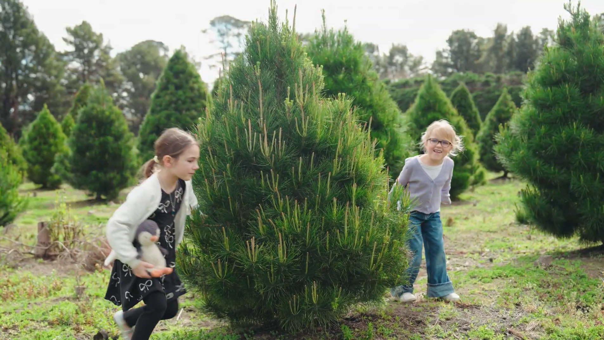

Every year, thousands of Victorian families visit our plantation in Somerville and the Mornington Peninsula to choose their tree. The question we hear most often is: "How do we keep our tree looking as fresh on Christmas Day as the day we cut it?"
The good news is that looking after a real Monterey or Radiata pine is remarkably simple. Think of your cut tree like a giant cut flower—give it water, keep it cool, and it will reward you with vibrant greenery and that quintessential Christmas pine aroma all season long.
1. The Crucial First Cut: Opening Up the Water Channels
When a Christmas tree is first harvested, its natural defence mechanism is to produce sap that seals over the cut stump within just two hours. This sap acts like a natural band-aid, preventing bacteria from entering—but it also blocks water from being absorbed.
If your tree was harvested more than an hour or two before you place it into its stand, always cut a straight, flat sliver of approximately 1 to 2 centimetres off the bottom of the trunk.
Important Farm Tip: Always make a flat, perpendicular cut. Never cut the trunk at an angle or whittle down the bark into a point to fit a small stand. The outer layers of wood just beneath the bark (the sapwood and cambium) are where water uptake occurs. If you strip the bark away, you severely diminish the tree's ability to absorb water.
A freshly harvested Christmas tree can drink between 2 to 4 litres of water in its first 24 hours alone! Never allow the stand reservoir to drop below the base of the trunk.
— John & Mary, 2nd Generation Tree Growers2. Location, Location, Location: Choosing the Right Spot
Where you position your tree in the home makes a tremendous difference to how long it retains its moisture. In an Australian summer, heat and dry circulating air are the two greatest factors that lead to dried needles.
When deciding where to display your tree, keep these golden guidelines in mind:
Check Water Daily
Top up the reservoir every morning. If the water level drops below the cut base, sap will re-seal the trunk.
Keep Cool & Shaded
Keep your tree away from direct harsh afternoon sunlight, ducted heating outlets, and hot appliances.

Water-Holding Stand
Always use a high-capacity Cinco or OZCO stand with sturdy steel centering bolts and a large bowl.
If possible, place your tree near a window that receives gentle morning light rather than scorching west-facing afternoon sun. Be cautious of ducted cooling and heating vents directly overhead—a constant draught will dry out the pine needles prematurely.
3. Water Additives: Myths vs. Farm Reality
Over the years, we have heard every home remedy imaginable: adding sugar, lemonade, aspirin, bleach, or even floral preservatives to the tree stand.
Our answer is straightforward: clean, cold tap water is all your tree needs. Independent university horticultural studies have confirmed that additives provide no measurable benefit and can sometimes promote bacterial growth in the stand basin. Plain, cool tap water replenished daily is the gold standard for fresh pine longevity.


4. Decorating with Care: Lights and Branch Balance
Once your tree is steady and hydrated, the fun part begins! To keep your tree looking its absolute best:
• Choose LED Fairy Lights: Traditional incandescent bulbs generate gentle warmth that can dry out adjacent foliage. Modern low-voltage LED lights run completely cool to the touch and are both energy-efficient and tree-friendly.
• Distribute Ornament Weight: Hang heavier heirloom ornaments closer to the trunk on thicker branch bases, reserving outer branch tips for lightweight baubles, tinsel, and ribbons.
• Visit Ma's Christmas Corner: If you are looking for timeless handmade decorations, visit our gift shop at the farm for custom tree toppers, wooden ornaments, and sparkling baubles.
5. Post-Holiday Care: 100% Eco-Friendly Recycling
One of the greatest virtues of choosing a real Christmas tree is that it is completely biodegradable and renewable. Unlike plastic artificial trees that sit in landfill for hundreds of years, real pines can be chipped, composted, and returned to the earth as rich organic mulch.
When the festive season concludes:
• Check with your local Mornington Peninsula Shire council for scheduled green waste kerbside collections.
• If you have a garden mulcher, chip your branches for garden beds—pine mulch retains soil moisture during dry summer months and naturally deters garden pests.
Comments (3)
Leave a Comment
Your email address will not be published. Required fields are marked *


We have been getting our tree from your Somerville farm for seven years now. Cutting that 1 cm off the trunk always makes a massive difference! Our tree stayed green and fragrant well past New Year's Eve last year.
Great tip on avoiding additives like sugar. We used to put aspirin in the water thinking it helped, but plain tap water has worked so much better since we bought our Cinco stand from your shop. Can't wait to visit this weekend!
Our kids loved riding the carriage last year when we picked our tree. Are dogs allowed on leashes again this season? Looking forward to bringing our golden retriever!